מהי קריקטורה?
רישום, איור או ציור, של דמות, אובייקט או סיטואציה באופן שמגזים, מבקר או מגחיך את מושא הציור, את מאפייניו הפיזיים, את מעשיו, את אמירותיו או את עמדתו הפוליטית.
מקור המילה באיטלקית, Caricare - להעמיס, לעוות. הואיל וקריקטורות עשויות להעליב או לבקר, הן הפכו מקובלות יותר ויותר עם גדילת האפשרות לבקר את מחזיקי הכוח הפוליטי והכלכלי, בערך מסוף המאה ה-15. נהוג לראות בסדרה של רישומי "טיפוסים" של לאונרדו דה וינצ'י את הקריקטורות הראשונות.
הפריצה הגדולה של הקריקטורה הייתה בתקופת המהפכות בארצות הברית ובצרפת, ככלי לניגוח בין הפלגים השונים. עם עליית המשטרים הפרלמנטריים באירופה ובחלקי אמריקה, ובמקביל עם התמסדות העיתונות היומית והמגזינים במהלך המאה ה-19, קריקטורות הפכו מדיום נפוץ ופופולארי.
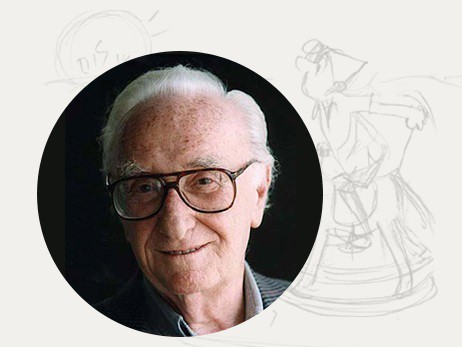 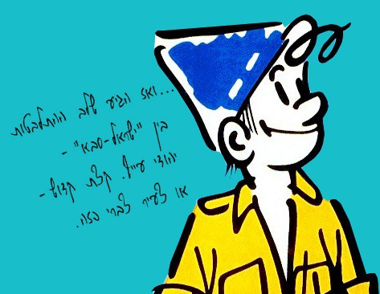 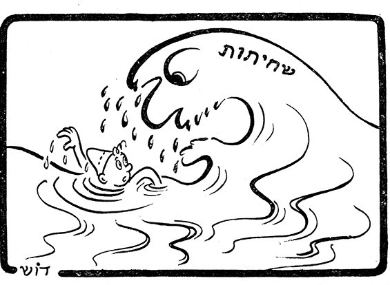
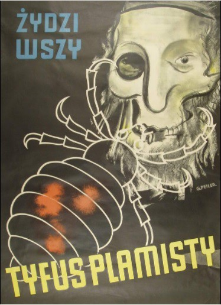
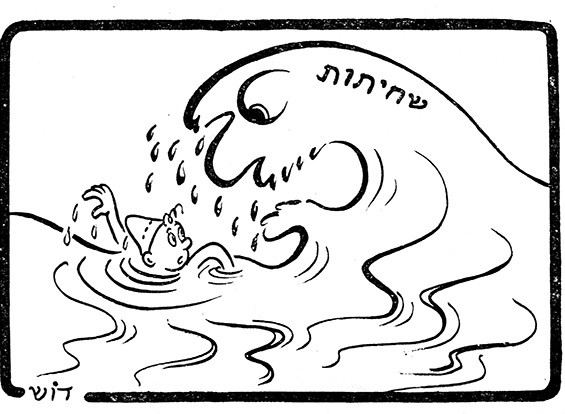
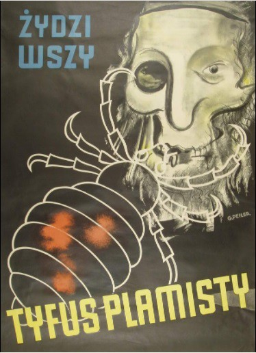
הקריקטורות של דוש ליוו את התפתחותה של מדינת ישראל
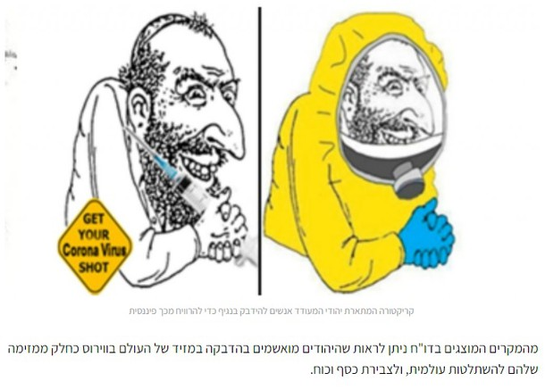 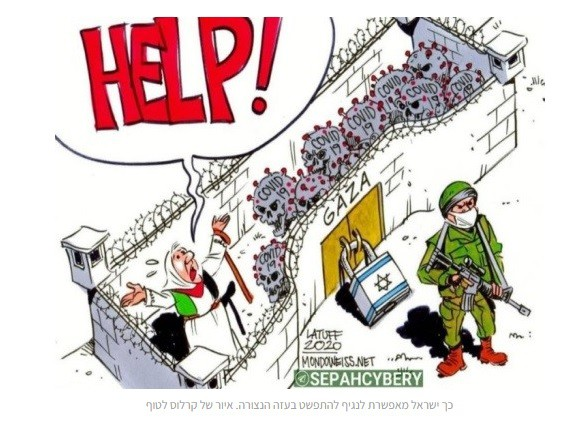שרוליק היה כוכב כמעט קבוע בקריקטורות שלו, אם כי דוש צייר לעיתים קרובות גם מנהיגים פוליטיים, אישי ציבור ודמויות ישראליות ובינלאומיות מוכרות.
הקריקטורות שלו עסקו במגוון הנושאים שהעסיקו את הציבור בארץ וכמעט תמיד נכללה בהן עמדה מחודדת וברורה.
דוש נהג לומר כי הקריקטורה מבחינתו היא "ביטוי פובליציסטי סאטירי ומאמר פרשני מצויר", וההיבטים הגרפים שלה שימשו בידיו רק כלי כדי להביע את דעתו על האירועים בהם עסקה.
הקריקטורה תציג תמיד נקודת מבט אישית וביקורתית. לכן רק טבעי הוא שאירוע כלשהו יזכה בקריקטורה לביטויים שונים בין עיתון אחד לאחר.
עלילות דם מודרניות: ישראל מואשמת בהפצת הקורונה
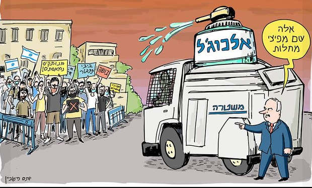קריקטורות מרחבי העולם ובכירים ברשות הפלסטינית ובעולם הערבי מציגים את ישראל כמפיצה הראשית של הנגיף. הדו"ח שפורסם – המהווה המשך לדו"ח קודם שהוכיח זיקה ברורה בין תנועות ה-BDS לאנטישמיות – חושף מקרים המוכיחים שימוש נרחב בווירוס הקורונה במטרה לקדם דה-לגיטימציה של מדינת ישראל באמצעות מוטיבים אנטישמיים והפצת תיאוריות קונספירציה.
מהמקרים המוצגים בדו"ח ניתן לראות שהיהודים מואשמים בהדבקה במזיד של העולם בווירוס כחלק ממזימה שלהם להשתלטות עולמית, ולצבירת כסף וכוח. האידיאולוגיה האנטישמית הופצה באמצעות איורים וקריקטורות במדיה החברתית, ושיח פומבי של גורמים רשמיים בנושא.
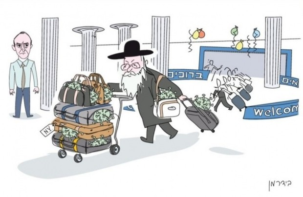גם בסביבה הקרובה מואשמת ישראל בשימוש בקורונה כנגד הפלסטינאים
הרשות הפלסטינית טענה שישראל צריכה לשחרר את האסירים כי היא אינה יכולה לשמור עליהם מפני הידבקות בנגיף. דיווחים שקריים לפיהם אסיר פלסטיני משוחרר חלה בקורונה ואסירים אחרים נדבקו מסוהרים היוו חלק מעלילת הדם שהתפתחה סביב הנושא. בקריקטורות שפורסמו נראים חיילי צה"ל משתעלים על אסירים וזורקים עליהם נגיפי קורונה על מנת שיידבקו. החיילים, כמובן, מוצגים עם אף גדול.
ומה קורה בתוכנו? השימוש במיתוס האנטישמי בשימוש גם בשסעים הפנימיים
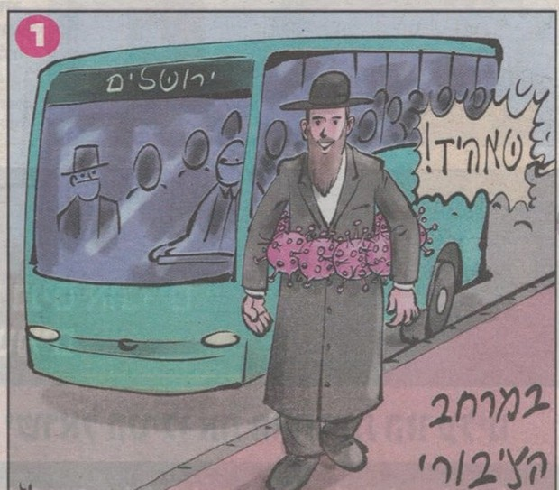 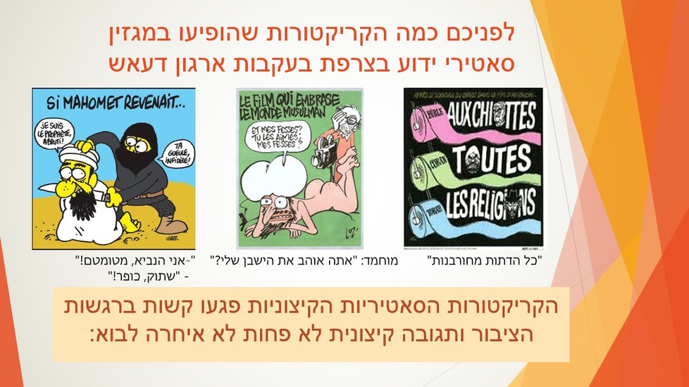 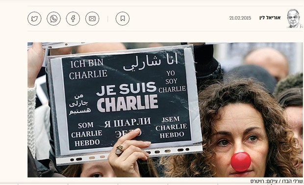 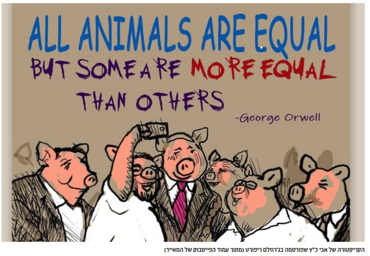
 play_circle_filled
play_circle_filled
יומן עם איילה חסון - על האיסלאם הרדיקלי בצרפת בעקבות הטרור ב"שארלי הבדו"
לחץ לצפייה בסרטוןהאם חופש הביטוי בכל מחיר?

נפתח בשאלת-יסוד פשוטה: אלה המאמינים בעיקרון חופש הביטוי בקנאות, עד כדי כך שהם מאמינים שיש להציבו בראש סולם הערכים, מה הם היו אומרים, למשל, אם בשם חופש זה היו מופיעות ברחבי העולם המוסלמי, ומעבר לו, קריקטורות המציגות את קורבנות השואה בתיאור קריקטורי קיצוני של דימוי לא מחמיא מעולם החי? האם גם אז הם היו אומרים שיש לקדש את חופש הביטוי, ושמותר בשם חופש הביטוי ללעוג לקורבנות השואה?
אני מקווה מאוד כי תשובתם תהיה שלילית. שאלתי אינה היפותטית. באיראן כבר הכריז משרד התרבות על תחרות קריקטורות בנושא השואה; כן, בתגובה לאיורים של הנביא מוחמד ב"שרלי הבדו". ומ"שרלי הבדו" עוברים למדרגה גבוהה יותר של לעג וביזוי של קדושת הדת המוסלמית: מציירים קריקטורה המתארת את הנביא מוחמד ככלב.
ברור כי העם היהודי לא יוכל לסבול קריקטורות מלעיגות המתארות את קורבנות השואה כרמשים; אך אם מותר בשם חופש הביטוי לצייר קריקטורות המדמות את מוחמד לכלב - היכן יוצב הגבול?
גבולות חופש הביטוי הם לא רק שאלה הנוגעת לתחום המשפט, אלא גם לתפיסה הציבורית הנורמטיבית-האתית מה מותר לעשות ומה אסור לעשות במימוש חופש זה.
ומה קורה אצלנו? האם חופש הביטוי בכל מחיר?


הקריקטוריסט אבי כץ, בעל טור הסאטירה המאויר השבועי הקבוע בג'רוזלם ריפורט, 'פוטר' מתפקידו בעקבות קריקטורה ביקורתית על חוק הלאום. ארגון העיתונאים פרסם בעקבות כך גינוי חריף.
הקריקטורה שצייר כץ, הציגה פראפרזה על צילומה של אוליבייה פיטוסי, המציג את חברי הקואליציה ב'סלפי ניצחון' לאחר ההצבעה להעברת חוק הלאום. חברי הכנסת הוצגו כחזירים, בהשראה מתוך ספרו של ג'ורג' אורוול 'חוות החיות' – בו המהפכה של חיות המשק נבגדת כשקבוצת החזירים תופסת את השלטון, ומחוקקת חוקים המעניקים לה פריווילגיות על פני יתר בעלי החיים. על מנת לא להשאיר יותר מדי מקום לפרשנות, כתב כץ באחורי התמונה גם את הציטוט המפורסם, אותו שינוי שמכניסים החזירים בתקנון החווה בספר על פיו: "כל החיות שוות – אך יש חיות, ששוות יותר".
בעקבות האיור הגיעו לעיתון שורה של תגובות נזעמות – ייתכן שבשל הרגישות בציבור הישראלי לסמל החזיר, אשר גרסו שמדובר בהסתה או בחריגה מגבולות הטעם הטוב. יועץ התקשורת נדב שטראוכלר, כתב בפוסט שפרסם בעמוד הפייסבוק שלו כי הקריקטורה מריחה מהסתה, וטען כי הציור מזכיר לו את ציור מוחמד כרות הראש שפורסם במגזין הצרפתי שרלי הבדו. בעקבות הביקורת הודיע העיתון לכץ על הפסקת ההתקשרות עימו, זאת על אף שהקריקטורה אושרה ופורסמה על ידי המערכת.